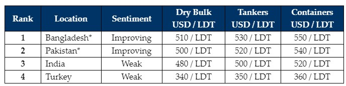

inWeekly Demolition Reports19/02/2024

Despite Chinese New Year Holidays concluding on Friday, a pervading theme of anunrelenting dearth in the overall availability of tonnage across global ship recycling markets has been enduring for several quarters now, resulting in another dry and dreary week of market inactivity and silence across all recycling destinations.
The industry also re-introduced us to Econ 101 this week, in that, charter rates continue to remain artificially elevated (especially) in the dry bulk sector, consequently placing a tighter squeeze on the overall supply of vessels for recycling, a subsequent firming of demand & offers from the Bangladeshi and Pakistani markets, and a simultaneous cooling of sentiments & pricing from an inexplicably reserved India – the forever anomalous market regularly defying predictable patterns.
Even in the container sector, wherefrom an overall clearing of older units has been overdue, this segment continues to (surprisingly) generate a bevy of second-hand buyers of overaged box carriers who are willing to fix & operate these aged units at levels marginally above Opex / Capex rates, just to make the most of this unseasonable uptick in the trading markets while they can.
As previously reportedly, what has been keeping freight rates artificially propped up during recent times are ongoing geopolitical concerns that continue to dominate the trading landscape via two wars, in addition to the unrelenting Houthi Rebel attacks that are maintaining disruptions for merchant vessels traversing the Red Sea area, all while many were expecting fewer ‘wakes’ in the shipping lanes over these traditionally quieter Chinese New Year holidays.
Moreover, with the conclusion of general elections in Bangladesh & even in Pakistan last week, a final and major election is expected to conclude in India next month as currently governing Prime Minister Modi is up for re-elections and (likely) victory, in what has turned out to be a noteworthy Q1 of voting and possible change across the major sub-continent ship recycling destinations this year. In the West End, Turkey reported further negative movements in import steel as well as the Turkish Lira, making matters further worse for a market that is rapidly running out of Oxygen.
Overall, as China’s workforce is expected to filter back to work next week and most businesses resume operations, all in the industry continue to hope for a busier finish to Q1 2024.
For week 7 of 2024, GMS demo rankings / pricing for the week are as below.

📄 Download PDF: Ship-recycling-market-insight-week-07-2024-Still-Slow-And-Its-2024.pdfSource: GMS,Inc. ,https://www.gmsinc.net/gms_new/index.php/web